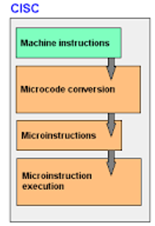
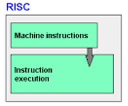
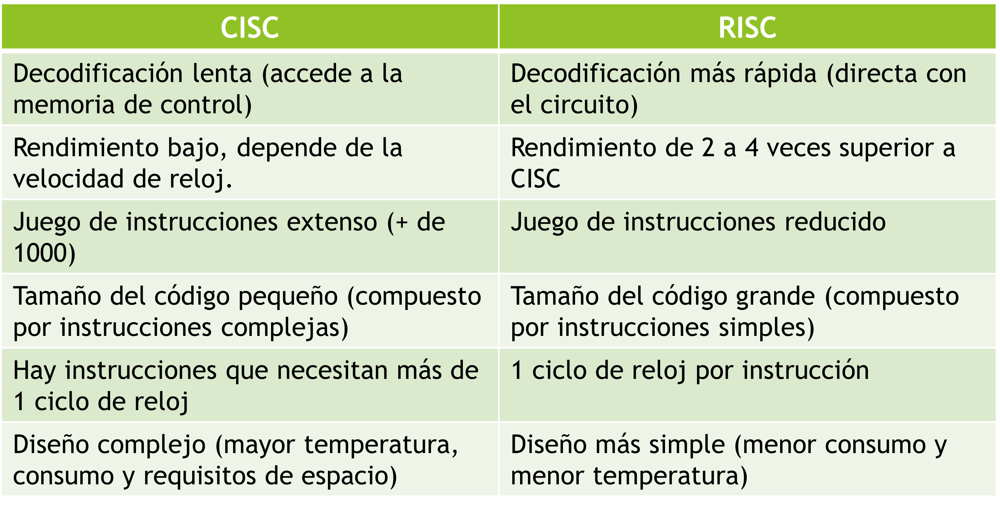
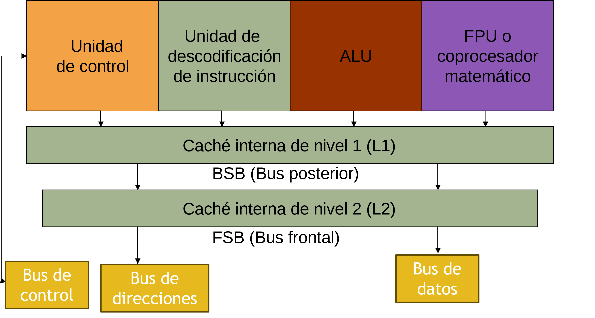
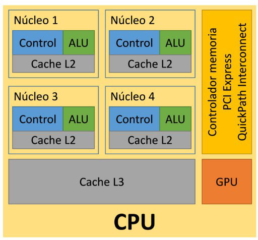

CISC/RISC
CISC (Complex Instruction Set Computer)
- También llamados procesadores de lógica programada.
- Para modificar el funcionamiento del microprocesador, sólo habría que modificar los microprogramas de su memoria de control.
- Se pueden añadir nuevas instrucciones código máquina o modificar las existentes.
- Son procesadores de propósito general.
- Aceptan juegos de instrucciones más extensos y complejos que los procesadores RISC.
- Hoy por hoy, copan el mercado de microprocesadores.
¿Cómo se ejecutan las instrucciones en un microprocesador con arquitectura CISC?
1) El secuenciador recibe la instrucción código máquina a ejecutar del registro de instrucciones.
2) El secuenciador accede al microprograma asociado a esa instrucción que está en la memoria de control
3) El secuenciador coge una a una las microinstrucciones y las envía para que se ejecuten.

RISC (Reduced Instruction Set Computer)
- También llamados procesadores de lógica cableada.
- No existe una memoria de control, ni tampoco microprogramas.
- La unidad de decodificación consta de un circuito complejo, que realiza la función de traducir una instrucción de código máquina en una secuencia de microinstrucciones a ejecutar por la unidad de control.
- Son procesadores de propósito específico.
- Para modificar su funcionamiento habría que rediseñarlos y reconstruirlos.
- Rendimiento de dos a cuatro veces superior que CISC


Arquitectura interna
Diagrama de bloques de una CPU

Diagrama de bloques de una CPU multicore
